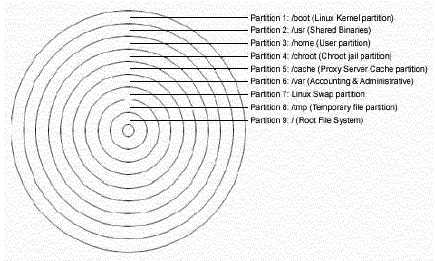

L
i n u x P a r
k
при
поддержке ВебКлуба |
Глава 2 Инсталляция вашего Linux сервера (Часть1)
В этой главе
Определите ваше
аппаратное обеспечение
Создайте
загрузочный и корневой диски
Классы и методы
инсталляции
Разбиение диска
(Disk Druid)
Компоненты
инсталляции (Выбор пакетов для инсталляции)
Выбор
индивидуальных пакетов
Описания
программ, которые должны быть деинсталлированы из соображений
безопасности
Как
использовать команды RPM
Запуск и
остановка демонов
Описание
программы, которые должны быть удалены после инсталляции сервера
Программы,
которые должны быть установлены после инсталляции сервера
Программы
установленные на вашем сервере
Добавьте
цветов на ваш терминал
Обновление
программ до их последних версий
|
 |
Мы подготовили эту главу следуя за процедурой инсталляции.
Каждый раздел ниже будет проводить вас через различные экраны, которые будут
возникать в процессе установки сервера.
Время от времени Red Hat обновляет свою операционную систему на
новые версии и добавляет, удаляет и модифицирует некоторые пакеты, изменяет их
месторасположения, содержимое и возможности. Недавно Red Hat выпустила версию
6.2 своей операционной системы, которая представляет собой незначительное
обновление 6.1. В этой главе мы пытаемся рассмотреть вопросы инсталляции как
версии 6.1 так и 6.2. Все разделы в этой секции которые относятся к Red Hat 6.1
будут обозначаться (6.1), разделы относящиеся к Red Hat 6.2 (6.2),
а общие для обеих версиях – (All).
Определите ваше аппаратное обеспечение.
Понимание того, какое аппаратное обеспечение у вас установлено
является важнейшей составляющей успешной инсталляции Red Hat Linux. Поэтому
сейчас вы должны прекратить чтение и прояснить для себя этот вопрос. Будьте
готовы ответить на следующие вопросы:
- Сколько у вас установлено жестких дисков?
- Каков объем каждого из них?
- Если у вас несколько жестких дисков, то какой из них первичный?
- Какого типа диски у вас установлены (IDE, SCSI)?
- Сколько оперативной памяти установлено у вас?
- Имеете ли вы SCSI адаптеры? Если есть, то кто их производитель и какой они
модели?
- Есть ли у вас RAID система? Если есть, то кто ее производитель и какой она
модели?
- Мышь какого типа у вас установлена (Microsoft, Logitech, PS/2)?
- Как много в ней кнопок (2/3)?
- Если у вас “серийная” мышь, то к какому порту она подключена (COM1)?
- Кто производитель и какая модель у вашего видеоадаптера? Как много в нем
видеопамяти?
- Какой у вас монитор (производитель и модель)?
- Будете ли вы подключены к сети. Если да, то выясните следующее:
- Ваш IP
- Какова сетевая маска.
- Адрес “шлюза по умолчанию”
- IP адрес DNS сервера
- Ваше доменное имя
- Имя вашего компьютера
- Какие сетевые карты у вас установлены (производитель и модель)
Создайте загрузочный и корневой
диски
(All) Первое о чем надо подумать это создание
инсталляционной дискеты, известной также как загрузочная. Если вы купили
официальный Red Hat Linux CD-ROM, то вы найдете ее в коробке и вам не нужно ее
создавать. Она называется “Boot Diskette”. Время от времени можно столкнуться с
проблемой, что ваша инсталляция начатая со стандартной дискеты завершается
ошибкой, тогда вам потребуется специальная загрузочная дискета. Образ который
можно найти на CD-ROM и на веб-странице Red Hat Linux Errata (http://www.redhat.com/errata).
Шаг 1.
Перед тем как сделать загрузочный диск вставьте Official Red
Hat Linux CD- ROM часть1 в ваш дисковод. Когда программа спросит имя файла –
ответьте boot.img. Чтобы сделать загрузочный диск под MSDOS вам нужно ввести
следующие команды (принимаем, что CDROM это диск D:, и в него вставлен Official
Red Hat Linux CD-ROM).
C:\> d:
D:\> cd
\dosutils
D:\dosutils> rawrite
Enter disk image source file name:
..\images\boot.img
Enter target diskette drive: a:
Please insert a
formatted diskette into drive A: and press --ENTER-- :
D:\dosutils>
Программа rawrite.exe запрашивает имя образа. Введите boot.img
и вставьте дискету в дисковод. Затем программа спрашивает на какой диск записать
образ. Ответьте a:. После завершения процедуры подпишите дискету, например “Red
Hat boot disk”.
Шаг 2.
Если мы запускаем инсталляцию не напрямую с CD-ROM, то
загружайтесь с дискеты. Вставьте дискету, которую вы создали, в дисковод A:, на
компьютере, где вы собираетесь установить Linux и перезагрузите его. После
появления приглашения к загрузке нажмите Enter для продолжения и выполните три
следующих действия:
- Выберите язык
- Выберите тип клавиатуры
- Выберите тип мыши
Классы и методы
инсталляции
Red Hat Linux 6.1 и 6.2 включает четыре предопределенных типа
инсталляции:
- рабочая станция с GNOME
- рабочая станция с KDE
- Сервер
- Пользовательская
Первые три класса (рабочая станция с GNOME,
рабочая станция с KDE и Сервер) даны для упрощения процесса установки, но при
этом теряется гибкость настройки, которую бы нам хотелось иметь. По этой причине
мы настоятельно рекомендуем использовать опцию Custom, чтобы вы могли точно
знать какие сервисы установлены и на какие разделы разбиты диски.
Идея состоит в том, чтобы проинсталлировать минимальное
количество пакетов. Меньшее количество программного обеспечение, уменьшает
количество потенциальных проблем с безопасностью. Выберите “Custom” и нажмите
Next.
Разбиение диска (Disk Druid)
(All) Мы принимаем, что вы устанавливаете Linux на новый
диск, на котором нет никаких файловых или операционных систем. Хорошая стратегия
разбития диска, это разделение его на отдельные разделы для каждой важной
файловой системы.
Разбиение дика на несколько разделов дает следующие
преимущества:
- Защита от DoS (Denial of Service) атак
- Защита от SUID программ
- Более быстрая загрузка
- Облегчение процедуры резервного копирования и обновления
- Улучшенный контроль над смонтированными файловыми системами
- Ограничение для каждой файловой системы возможности роста
Внимание. Если на вашем компьютере есть файловые
системы, мы настоятельно рекомендуем сделать резервную копию вашей системы перед
разбиением диска.
Шаг 1.
Исходя из соображений стабильности и безопасности мы
рекомендуем разбить диск согласно принципам описанным ниже. Мы исходили из того,
что у вас есть SCSI диск объемом 3.2 GB. Конечно, вы можете изменить размеры
разделов, исходя из размеров вашего диска и личных нужд.
Разделы которые необходимо создать на вашем диске.
| /boot |
5MB |
Образы ядер находятся здесь. |
| /usr |
512MB |
Должен быть большим. Все двоичные файлы Linux хранятся здесь. |
| /home |
1146MB |
Пропорционально числу пользователей (например, 10MB на пользователя *
число пользователей 114 = 1140MB). |
| /chroot |
256MB |
Если вы будете использовать программы с CHROOT (например DNS). |
| /cache |
256MB |
Кэш раздел для прокси сервера (например, Squid). |
| /var |
256MB |
Содержит файлы которые изменяются при нормальной работе системы
(например, логфайлы). |
| <Swap> |
128MB |
swap раздел. Виртуальная память Linux. |
| /tmp |
256MB |
Раздел для временных файлов. |
| / |
256MB |
Корневой раздел. |

Все основные файловые
системы на отдельных раздела.
Мы создаем два специальных раздела /chroot и /cache. /chroot –
для программ умеющий менять корневую файловую систему (chroot). К ним относятся
DNS- сервер, Apache веб-сервер и ряд других программ. Раздел /cache предназначен
для кэширующего прокси сервера Squid. Если вы не хотите использовать Squid, то
вы можете не создавать его.
Расположите /tmp и /home на отдельных разделах, особенно если
пользователи вашего сервера имеют shell-доступ к нему. Также хорошей идеей будет
разместить на независимых разделах /var и /usr. Отделение /var защитит ваш
корневой раздел от переполнения.
В нашей конфигурации мы зарезервировали 256 MB под /chroot. Это
связано с тем, что на нем будут располагаться файлы из Apache DocumentRoot и
другие исполняемые файлы, связанные с Apache. Заметим, что размер каталога
Apache на /chroot зависит от общего объема занимаемого файлами из
“DocumentRoot”. Если вы не планируете использовать Apache, то можете уменьшить
размер этого раздела до 10 MB. Этого должно хватить для
DNS-сервера.
Минимальные размеры разделов.
Ниже приведены минимальные размеры разделов при которых система
корректно функционирует. Это действительно самые минимальные цифры. Они взяты
исходя из размеров старых жестких дисков – 512 MB.
| / |
35MB |
| /boot |
5MB |
| /chroot |
10MB |
| /home |
100MB |
| /tmp |
30MB |
| /usr |
232MB |
| /var |
25MB |
Disk Druid.
Disk Druid – это утилита, которая облегчает процедуру разбиения
диска на разделы. Выберите “Add” для создания нового раздела,
“Edit” для редактирования раздела, “Delete” для удаления раздела и
“Reset” сбросить последние изменения в исходное состояние. Когда вы
создаете новый раздел перед вами появляется новый экран, в котором вы должны
определить ряд параметров.
Точка монтирования (Mount Point): место в файловой
системе куда будет монтироваться данный раздел.
Size (Megs): размер
нового раздела в мегабайтах.
Partition Type: Тип раздела: Linux
native для файловой системы Linux и Swap для Linux Swap
раздела.
Если у вас SCSI диск, то устройство называется “/dev/sda”, а
если IDE диск, то “/dev/hda”. Если вы стремитесь к высокой
производительности и стабильности, то используйте SCSI диски.
Для описания
дисков в Linux используется комбинация из букв и цифр.
Первые две буквы –
первые две буквы из названия устройства. Например, “hd” (для IDE дисков)
или “sd” (для SCSI дисков).
Следующая буква – Эта буква показывает
порядок подключения устройств к интерфейсу.Например, “/dev/hda” (первый
IDE диск) и “/dev/hdb” (второй IDE диск).
A swap partition
Swap раздел используется для поддержки виртуальной памяти. Если
ваш компьютер имеет 16 MB памяти или меньше, то swap раздел вам просто
необходим. Если памяти у вас много больше, то его все равно рекомендуется
создавать. Минимальный размер swap-раздела должен быть равен объему RAM, но не
меньше 16 MB. Наибольший его размер 1 GB (столько поддерживает ядра серии 2.2).
Вы можете создать и использовать более одного swap-раздела. Swap-раздел лучше
располагать в начале диска. Физически начало диска находится на внешней части
цилиндра, поэтому головка за один оборот охватывает большую поверхность.
Ниже приведен пример разбиения диска при помощи утилиты Disk
Druid:
Add
Mount Point: /boot - ваш
/boot каталог.
Size (Megs): 5
Partition Type: Linux
Native
Ok
Add
Mount Point: /usr - ваш /usr каталог.
Size (Megs):
512
Partition Type: Linux Native
Ok
Add
Mount Point: /home - ваш
/home каталог.
Size (Megs): 1146
Partition Type: Linux
Native
Ok
Add
Mount Point: /chroot - ваш /chroot каталог.
Size
(Megs): 256
Partition Type: Linux Native
Ok
Add
Mount Point: /cache
- ваш /cache каталог.
Size (Megs): 256
Partition Type: Linux
Native
Ok
Add
Mount Point: /var - ваш /var каталог.
Size (Megs):
256
Partition Type: Linux Native
Ok
Add
Mount Point: - ваш /Swap
раздел (не имеет точки монтирования на вашей файловой системе).
Size (Megs):
128
Partition Type: Linux Swap
Ok
Add
Mount Point: /tmp - ваш /tmp
каталог.
Size (Megs): 256
Partition Type: Linux
Native
Ok
Add
Mount Point: - ваш корневой каталог.
Size (Megs):
256
Partition Type: Linux Native
Ok
По окончании процедуры разбиения диска у вас должна получиться
следующее:
| Точка монтирования |
Устройство |
Объем требуемый |
Объем выделенный |
Тип файловой системы |
| /boot |
Sda1 |
5M |
5M |
Linux Native |
| /usr |
Sda5 |
512M |
512M |
Linux Native |
| /home |
Sda6 |
1146M |
1146M |
Linux Native |
| /chroot |
Sda7 |
256M |
256M |
Linux Native |
| /cache |
Sda8 |
256M |
256M |
Linux Native |
| /var |
Sda9 |
256M |
256M |
Linux Native |
| <Swap> |
Sda10 |
128M |
128M |
Linux Swap |
| /tmp |
Sda11 |
256M |
256M |
Linux Native |
| / |
Sda12 |
256M |
256M |
Linux Native |
| Drive |
Geom [C/H/S] |
Total (M) |
Free (M) |
Used (M) |
Used (%) |
| sda |
[3079/64/32] |
3079M |
1M |
3078M |
99% |
Сейчас, когда вы разбили диск и определили точки монтирования
для разделов, нажмите Next для продолжения. После того, как новые разделы
созданы, вам будет предложено отформатировать их. Выберите раздел для
инициализации, поставьте “галочку” напротив “проверить диски на плохие блоки” и
нажмите Next. Раздел будет отформатирован и станет доступен для использования
под Linux.
На следующем экране вам будет предложено выбрать конфигурацию
LILO, где вы сможете выбрать куда вы ее хотите проинсталлировать.
- В Master Boot Record (MBR)
- В первый сектор загрузочного раздела.
Обычно, если Linux будет единственной ОС на вашей машине, то
LILO устанавливают в MBR. После этого вам будет предложено настроить сеть и
часы. Когда часы будут установлены, нужно выбрать пароль пользователя root и
определить конфигурацию идентификации. Для нее не забудьте выбрать:
- Включить MD5 пароли
- Включить теневые пароли
Включать NIS не надо, так как мы не будем настраивать NIS
сервис на нашем сервере.
Компоненты инсталляции
(Выбор пакетов для инсталляции)
(All) После того, как вы разбили диск и отформатировали
разделы наступает пора выбирать пакеты для инсталляции. По умолчанию, Linux
является полнофункциональной системой с большим количеством запущенных сервисов.
Большинство из них не нужны и могут нанести вред безопасности сервера. Идеально,
когда каждый из сервисов работает на отдельной машине. Многие дистрибутивы Linux
сконфигурированы по умолчанию на обслуживание широкого спектра сервисов, так что
вам надо сконфигурировать сервер так, чтобы отключить ненужные службы.
Предложение использовать важнейшие сервисы на отдельных компьютерах улучшает
сетевую безопасность по следующим причинам:
- нет других служб, которые можно использовать для атаки
- различные сервисы могут обслуживать разные администраторы. Разнесение их
по отдельным машинам сократит количество конфликтных ситуаций между
администраторами.
- Отдельная машина может быть лучше сконфигурирована для выполнения
определенных задач. Разные сервисы требуют разное аппаратное обеспечение и
программную конфигурацию.
- При уменьшении количество сервисов уменьшается количество сообщений в лог
файлах, которые следует исследовать на предмет нестандартных ситуаций.
Правильная инсталляция Linux – первый шаг к стабильной и
безопасной системе. Сначала выберите какие компоненты системы вы хотите
проинсталлировать, а затем войдите в каждый из компонентов, чтобы отметить какие
пакеты надо устанавливать, а какие нет (Select individual packages). Так как мы
инсталлируем сервер, мы не будем устанавливать графический интерфейс (Xfree86).
Он на сервере не нужен, меньше процессов, меньше загрузка процессора, меньше
загрузка памяти, меньше риск нарушить безопасность системы и т.д. Графический
интерфейс обычно используется на рабочих станциях. Выберите следующие компоненты
для инсталляции.
- Networked Workstation
- Network Management Workstation
- Utilities
Теперь можете выбрать пакеты внутри каждого компонента.
Замечание: Выбрать эту опцию (Select individual
packages) очень важно до продолжения процедуры инсталляции.
Выбор индивидуальных пакетов
Инсталляционная программа представит список доступных групп с
пакетами, выберите необходимую группу для проверки. Пакеты перечисленные ниже
должны быть удалены из соображений безопасности, оптимизации и ряда других
причин.
(6.1)
| Applications/File: |
git |
| Applications/Internet |
finger, ftp, fwhois, ncftp, rsh, rsync, talk, telnet |
| Applications/Publishing |
ghostscript, ghostscript-fonts, mpage, rhs- printfilters |
| Applications/System |
arpwatch, bind-utils, knfsd-clients, procinfo, rdate, rdist, screen,
ucd-snmp-utils |
| Documentation |
indexhtml |
| System Environment/Base |
chkfontpath, yp-tools |
| System Environment/Daemons |
XFree86-xfs, lpr, pidentd, portmap, routed, rusers, rwho, tftp,
ucd-snmp, ypbind |
| System Environment/Libraries |
XFree86-libs, libpng |
| User Interface/X |
XFree86-75dpi-fonts, urw-fonts |
(6.2)
| Applications/File: |
git |
| Applications/Internet |
finger, ftp, fwhois, ncftp, rsh, rsync, talk, telnet |
| Applications/Publishing |
ghostscript, ghostscript-fonts, groff-perl, pnm2ppa, mpage,
rhs-printfilters |
| Applications/System |
arpwatch, bind-utils, rdate, rdist, screen, ucd-snmp-utils |
| Documentation |
indexhtml |
| System Environment/Base |
chkfontpath, yp-tools |
| System Environment/Daemons |
XFree86-xfs, lpr, pidentd, portmap, routed, rusers, rwho, tftp,
ucd-snmp, ypbind, finger-server, nfs-utils, pidentd, portmap, rsh- server,
rusers-server, rwall-server, talk-server, telnet-server, tftp-server,
ypserv |
| System Environment/Libraries |
XFree86-libs, libpng |
| User Interface/X |
urw-fonts |
Далее мы приведем описание каждой программы которые мы хотим
деинсталлировать. Кто-нибудь может спросить, почему мы удаляем finger, ftp,
fwhois и telnet на сервере? Первое, это то, что все эти программы по своей сути
небезопасны. Представьте, что хакер имеет доступ на ваш новый сервер, тогда он
сможет использовать finger, ftp, fwhois и telnet для доступа к другим
компьютерам в вашей сети. Если этих программ нет на сервере, то ему придется
использовать их в другом месте или попытаться проинсталлировать их у вас, а это
легко можно отследить, например, при помощи Tripwire. Хотя такие сервисы как
telnet, finger, talk, rsh, rusers, rwall и tftp в Red Hat 6.2 разделены на
серверные и клиентские пакеты, мы все равно рекомендуем деинсталлировать их из
соображений повышения безопасности.